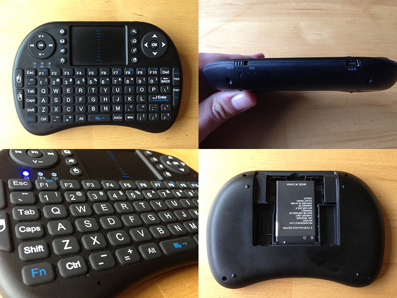

Note: This post was originally published on iamianwright.com it's been moved here for archival purposes.
For a few years now I've run a Mac Mini as my main source of media. Originally I just used it as a server and had a jailbroken Apple TV running Plex for the front end. Recently I've found that I watch a lot more content online and it's more convenient just to connect the Mac Mini directly to the TV although this raises the issue of controlling it. Screen Sharing does a good job but for convenience I wanted a dedicated remote. Apple's wireless keyboards and trackpad are insanely expensive so I turned to the web for a cheap HTPC remote. DX.com had me covered, always a bastion for cheap chinese electronics they have a veritable smorgasbord of bluetooth keyboards and trackpads available.
I opted for the succinctly named "Genuine Rii Mini I8 Wireless 92-Key QWERTY Keyboard Mouse Touchpad with USB Receiver - Black", for under £20 it was worth a try. It was delayed in delivery due to some other items in my basket being on backorder but after a few weeks it arrived. It comes packaged in a fairly generic box with some poorly translated english instructions and a USB to Mini USB cable.

Construction and Design
The build quality was considerably higher than I expected, no flimsy plastics, squeaks or creaks. The plastic has a smooth finish, feels slightly rubberised and fits well in your hands. It's about the size of an Xbox 360 controller but much thinner. The back of the device has a panel that slides off to reveal a lithium ion battery and the USB dongle. The top edge of the device has a simple on/off slide switch and a mini USB port for recharging.
The lower two thirds have a fairly standard keyboard layout and the upper third has a trackpad flanked by some function buttons and two circular pads with media and navigation controls.
Functionality
Retrieve the USB dongle from the back of the device, plug it into the Mac, switch on the device and it's ready to use. The trackpad is responsive and easy to use. The layout of some of the buttons is a little questionable but you get used to it quickly. Typing on the keyboard is okay although I've noticed several missed key presses. It's not a deal breaker as I only need to type in the odd searches now and then. The "Win" key maps to the Command key on the Mac and shortcuts work reliably. The navigation buttons on the top right work in Plex and Safari and the media buttons at the top left trigger iTunes.
Conclusion
Overall I'm very impressed with the device and I have found that I rarely use Screen Sharing any more. The Mac Mini is running a Minecraft Server, the Plex Media Server, my main iTunes library and a few other services. All of these can easily be administrated with this wireless keyboard. For under £20 I think you'd be hard pressed to find a better remote. As I mentioned at the top of this post DX stock a huge array of these devices and I imagine that they probably all have the same electronics inside so you can pick based mainly on aesthetics and layout.